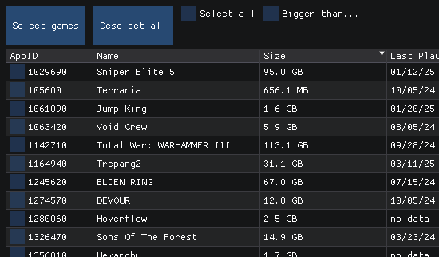

A Discord bot & website written in Python that interfaces with Spotify to keep a running playlist of posted music links. Due to Spotify API limitations
Project Two

Steam Cleaner
A native Win32 app written in C to help bulk-uninstall large and rarely used steam games
Home Lab
Home lab used for development, virtualization (KVM), testing, self-hosting, and backups